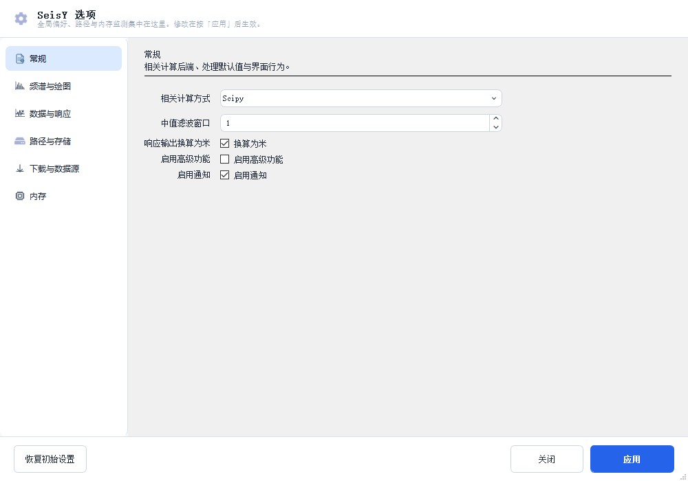

设置与偏好
SeisY 的设置分两层：偏好（会记住，存在 Config.ini 的 [Preferences] 段）和
当前事件参数（不记住，每次下载或加载都会覆盖）。
为什么当前事件参数不保存
台网、台站、通道、位置码、起止时间这些值每换一个事件就会变。把它们存成「默认值」
看起来方便，实际上下次打开时是一份过期参数，更容易出错。所以它们只跟着「下载地震数据」
面板走，不进偏好。
打开方式
设置 › 选项。工具栏上也有同名按钮。
选项面板

左侧六个分类，右侧是该分类下的全部设置项。改动不会立即生效， 点右下角 应用 后才写入并生效。
| 分类 | 包含 |
|---|---|
| 常规 | 相关计算方式、中值滤波窗口、响应输出换算为米、启用高级功能、启用通知 |
| 频谱与绘图 | 频谱方法（FFT/CZT）、分析模式、横轴模式、最大优势频带 |
| 数据与响应 | 去响应的默认输出单位、水位线、预滤波拐点 |
| 路径与存储 | 工作目录、阿波罗数据库路径、导出目录 |
| 下载与数据源 | FDSN 服务地址、超时、重试次数 |
| 内存 | 缓存上限、清理策略 |
几个值得说明的项
相关计算方式：Scipy 或 Numpy。结果一致，Scipy 在某些平台上更快。一般不用改。
中值滤波窗口：数据 › 滤波 › 中值滤波 使用的窗口大小。 窗口越大去尖峰越强，但也越容易削掉真实的高频成分。默认 3 点。
启用高级功能：打开后会出现一些实验性模块。不确定是否需要时保持关闭。
启用通知：长任务（批量下载、批处理）完成时弹出系统通知。
「恢复初始设置」会重置全部偏好
包括路径与存储里的工作目录。点之前先确认没有自定义过的路径，或先备份
Config.ini。
绘制频谱设置

设置 › 绘制频谱设置 是频谱分析专用的参数面板，与「选项」里的 频谱分类是同一份数据，只是入口不同、展开得更完整。
主要参数：
| 参数 | 说明 |
|---|---|
| 频谱方法 | FFT（等间隔）或 CZT（可指定任意频率范围，适合窄带细看） |
| 分析模式 | 全部道 / 当前道 |
| 横轴模式 | 自适应 / 均匀 / 全频带 / 自定义范围 |
| 最大优势频带 | 自适应模式下用于确定显示范围的频带 |
横轴模式存的是英文规范值
配置文件里这一项必须是
Adaptive / Uniform / Full Band /
Custom Fill，不能存中文。界面上的中文是显示层的翻译，直接改配置文件时要写英文。
配置文件在哪
Config.ini 与程序可执行文件同目录。它是纯文本，可以直接编辑，但要注意：
- 程序在按「应用」时会整段重写这个文件，注释会丢失；
- 手工改完需要重启程序；
- 里面不应该出现绝对路径（换机器会失效），路径项由「设置工作目录」维护。